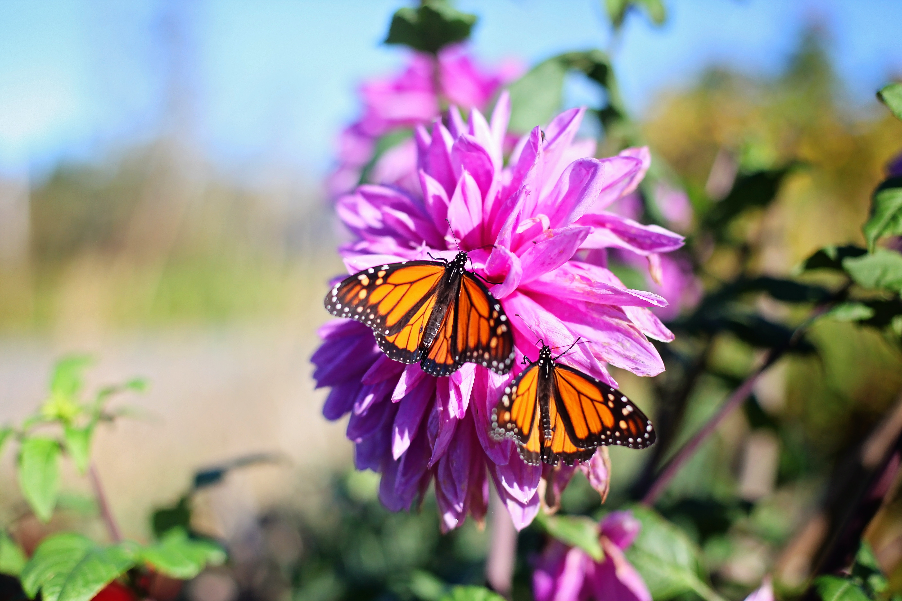
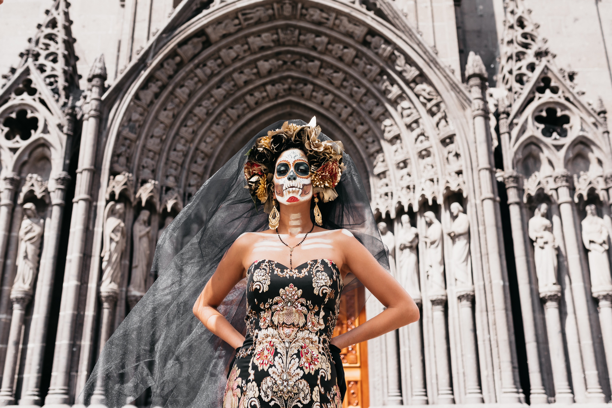

Swimming in CenotesLet's start with those cenotes we mentioned. Cenotes are natural sinkholes, filled with water, where the cave ceiling has collapsed. Mexico has thousands of cenotes - most are in the Yucatan Peninsula. Some cenotes are like small lakes in the jungle, where you can enjoy cliff jumping. Others are wondrous caverns with stalactites and stalagmites. You can snorkel and even dive in many of these, spotting fish and sometimes small turtles too. In the past, the ancient Mayans offered sacrifices in cenotes; today, the cenotes are a special part of Mexico's landscape. We had a fabulous time swimming in the fresh waters of the cenotes in the Riviera Maya - and can't wait to splash about in more. It's one of the most unique things to do in Mexico! The chance to experience these cool cenotes may even tip the scales in favor of Cancun and the Riviera Maya if, for example, you’re trying to decide whether to holiday in Puerto Vallarta or Cancun.

Marvel at Monarch ButterfliesEvery year, millions of Monarch butterflies make the perilous journey south from the U.S. and Canada - flying up to 3,000 miles - to spend the winter in the Sierra Madre mountains in Mexico. There, the Monarch Butterfly Biosphere Reserve is a UNESCO World Heritage Site, a huge natural area which protects them. You can take a day trip from the colonial city of Morelia to see the butterflies in the wild.

Witness the Day of the DeadThe Day of the Dead (Dia de los Muertos) is a multi-day festival at the beginning of November that celebrates the lives of loved ones who've passed away. It's a festive and joyous celebration, not a sad one, as Mexicans view death as a natural part of life. Families clean the graves and build colorful altars with flowers, photos and candles in the cemetery, so they can be with the souls of the departed. They bring toys for dead children and food to give to the spirits, as well as to eat while having a picnic by the graveyard. Often, they sleep overnight by the gravesite.